A step-by-step guide, with pictures, to adding and changing events and the words on the website.
The editing pages are a private part of the website. Nobody else can see them.
Open your web browser (the program you use for the internet) and type this address into the bar at the very top, then press the Enter key (it may say Return or Go):
Type your username and password into the two boxes, then click (circled in red).
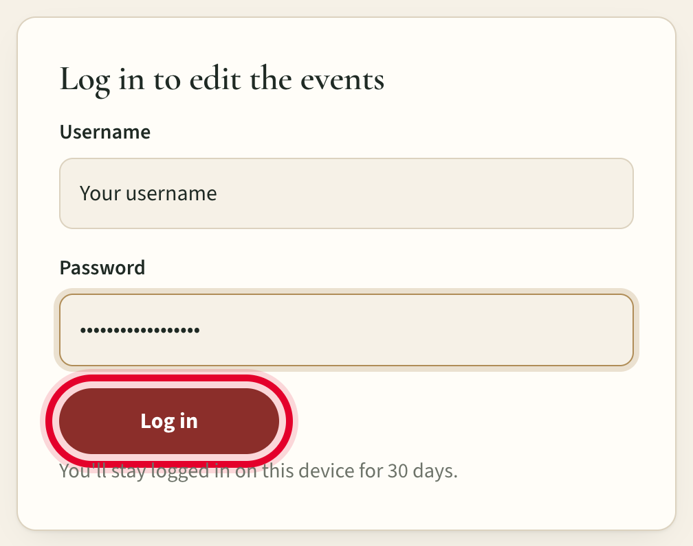
Once you've logged in, the computer remembers you for 30 days, so you won't usually need to log in again.
My username is:
If you forget your password, ask Mike.
After logging in you'll see the Edit events page.
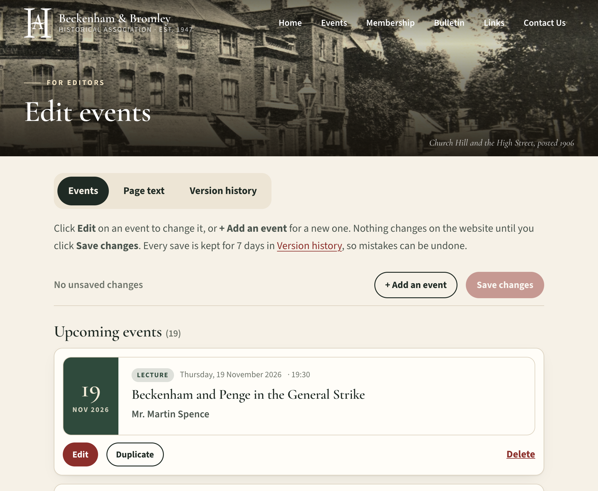
Events — add, change or remove events. This is the one you'll use most.
Page text — change the words on the other pages, such as the Home page or Contact Us.
Version history — undo a mistake by putting back an earlier version.
Below, each event is shown as a card that looks just as it will on the website. Scroll down the page to see them all, in date order. Events that have already happened are tucked away at the bottom, under Past events.
As an example, we'll add a Christmas Social Evening on Thursday 10 December 2026 at 7pm.
Click near the top of the page.
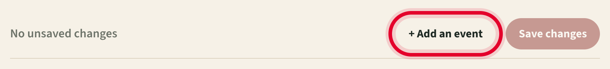
A new, empty card opens with boxes to fill in. Click in each box and type. Only the Date and Title are needed; leave any others empty if they don't apply.
As you type, the top of the card shows exactly how the event will look on the website.
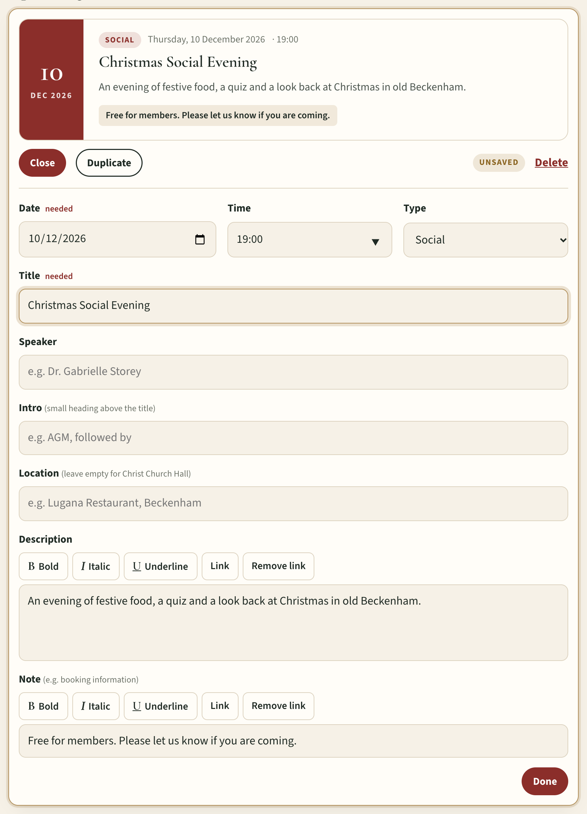
Our example, filled in. The preview at the top updates as you type.
| Date | Click the little calendar and choose the day, or type it as day/month/year, e.g. 10/12/2026. |
|---|---|
| Time | Use the 24-hour clock: 19:30 for 7.30pm, 14:30 for 2.30pm. The small arrow shows the usual times. |
| Type | Lecture, Visit or Social. This sets the colour of the card. |
| Title | The name of the talk or event. |
| Speaker | e.g. Dr. Helen Lacey. Leave empty for visits and socials. |
| Intro | A small heading above the title, e.g. AGM, followed by. Usually left empty. |
| Location | Leave empty for Christ Church Hall. Otherwise type the place, e.g. Lugana Restaurant, Beckenham. |
| Description | A few sentences about the event (optional). |
| Note | Shown in a little shaded box, e.g. Pre-booking essential. |
When you've finished, click at the bottom of the card. This just closes the boxes; it doesn't save yet.
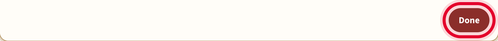
A yellow box appears at the top to remind you the change isn't on the website yet. Click .
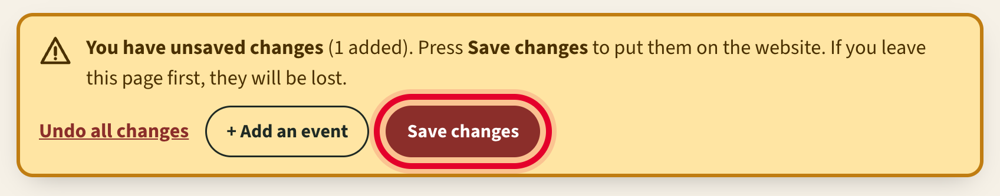
You'll see the word Saved. That's it: the event is now on the website. Click View it if you'd like to see it.
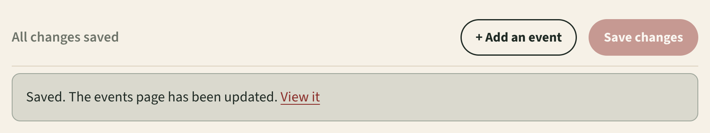
Here is how our example looks on the website's Events page:
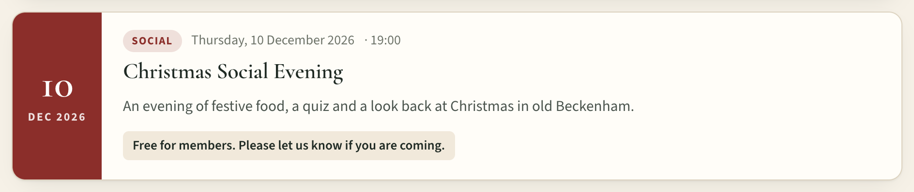
If you close the page or go elsewhere before clicking Save changes, your changes will be lost. While the yellow box is showing, there's something still to save.
For example, if a talk's start time moves from 7.30pm to 6.30pm.
Scroll down to the event and click under it.
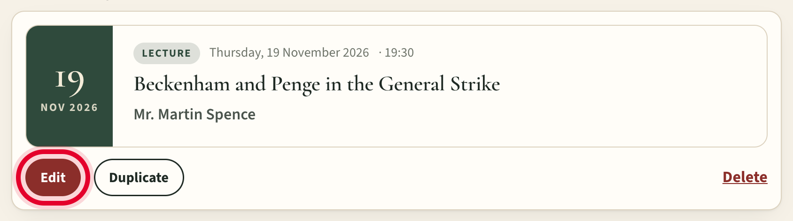
The boxes open. Click in the box you want to change, delete the old words (with the Backspace key) and type the new ones. Here we've changed the time to 18:30.
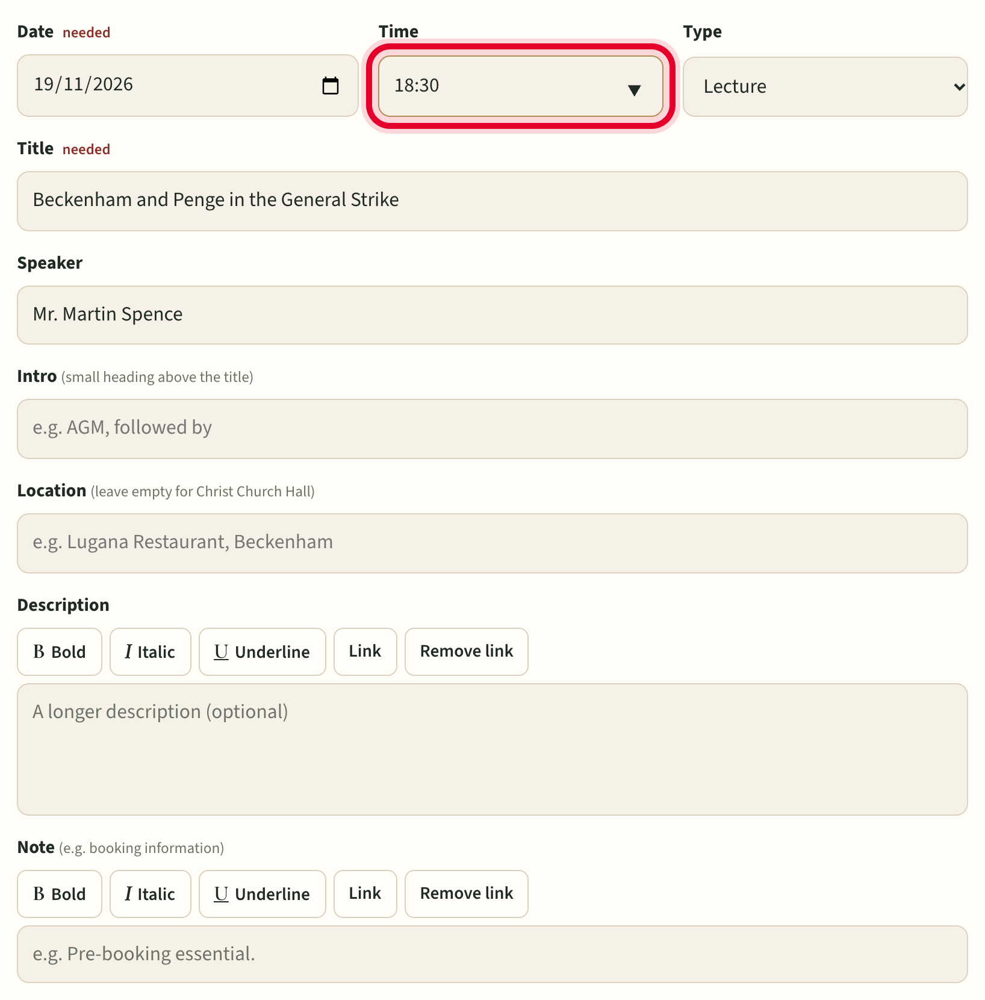
Click , then at the top, just as when adding an event.
Handy for something that happens every year, like the Annual Dinner. Click under the old one and a copy appears, ready for you to change the date and any details. Then click and .
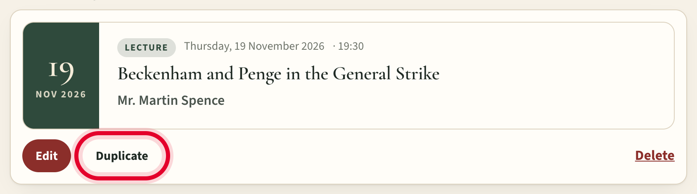
Click the red word Delete on the right of the card. It will ask "Delete this event?". Click , or Cancel if you've changed your mind. Then click .
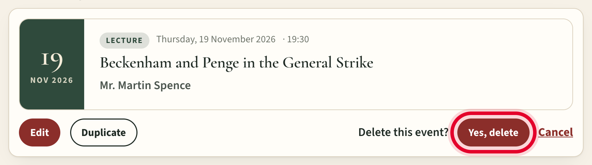
There's no need to delete events once they've happened. They move to Past events by themselves.
The Description and Note boxes have some extra buttons.
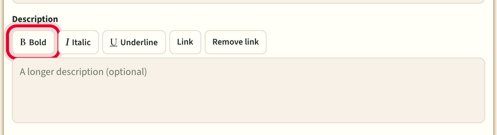
Select the words: hold the mouse button down at the start of them, drag to the end, and let go. They'll be highlighted.
Click B Bold. Italic and Underline work the same way.
Select the words that should be the link, then click Link.
Type the web address (for example www.history.org.uk) or an email address, then click .
To take a link off again, select the words and click Remove link.
Click Undo all changes in the yellow box. Everything goes back to how it was when you last saved.
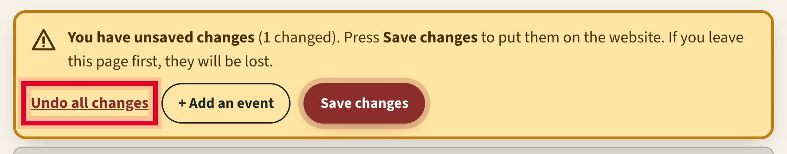
Click Version history at the top of the page. Every save from the last week is listed, newest first; the one marked On the website now is what people can see.
Find the version from before the mistake and click , then . You can click "Show me exactly what would change" first if you'd like to check.
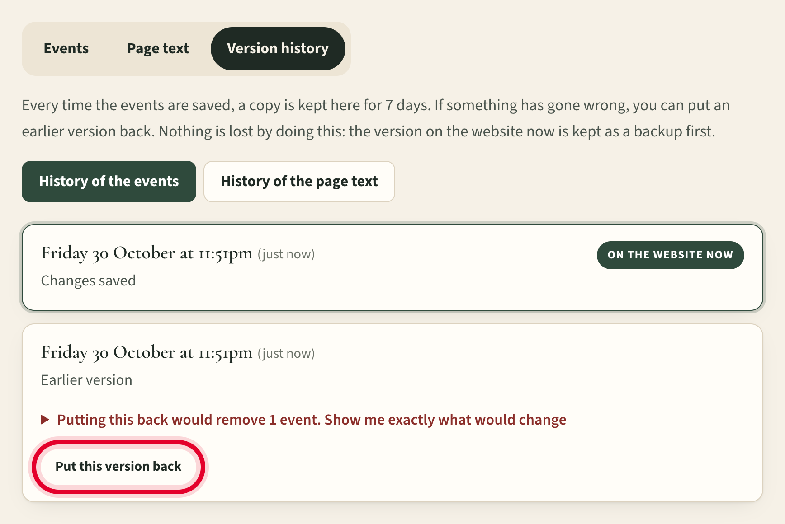
Don't worry about putting back the wrong one: the version on the website is always kept too, so this can itself be undone.
Such as the introduction on the Home page, or the names and email addresses on Contact Us.
Click Page text at the top of the editing pages.
Click the name of the page you want: Home, Events, Membership, Bulletin, Links or Contact Us.
Change the words in the boxes on the left. The picture on the right shows how the page will look.
Click .
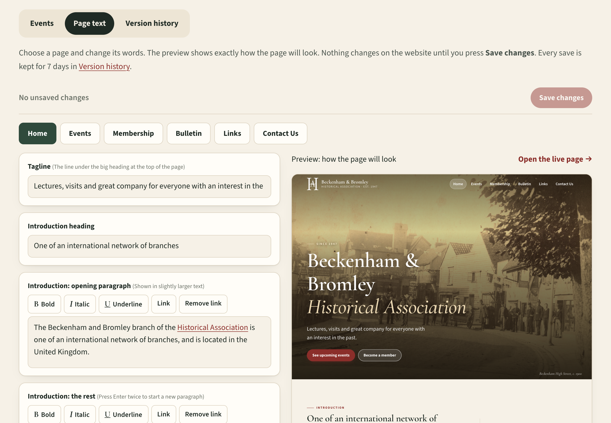
Wait a minute or two, then refresh the page (the round arrow at the top of the browser). Very occasionally it can take up to 5 minutes.
Your changes are still there; don't close the page. Open a new tab, go to the editing address and log in again. Then come back to the first tab and click Save changes.
Something in it couldn't be understood, often the date. It isn't on the website yet. Correct it, or delete it if it isn't needed, then save.
Something needs fixing before it can be saved, for example a missing date or title. The message says what.
If you haven't saved, click Undo all changes. If you have, use Version history (section 7). Or just stop and ask Mike. Nothing is ever lost.